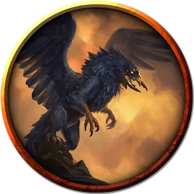

Древний глубинный ворон
Ancient Deep Crow
Огромный Монстр, без мировоззрения

Класс Доспеха 18 (природный доспех)
Хиты 187 (15к12 + 90)
Скорость 20 футов, летая 80 футов
| мод | спас | ||
|---|---|---|---|
| СИЛ | 23 | +6 | +6 |
| ЛОВ | 16 | +3 | +3 |
| ТЕЛ | 23 | +6 | +11 |
| мод | спас | ||
|---|---|---|---|
| ИНТ | 10 | +0 | +0 |
| МДР | 15 | +2 | +7 |
| ХАР | 19 | +4 | +4 |
Навыки Восприятие +7, Скрытность +13
Сопротивление урону дробящий, колющий, рубящий от немагических атак
Чувства слепое зрение 60 футов, тёмное зрение 120 футов, пассивное Восприятие 17
Языки Язык Глубинных воронов
Опасность 15 (13000 опыта)
Бонус мастерства +5
Особенности
Сопротивление магии. Глубинный ворон совершает с преимуществом спасброски от заклинаний и прочих магических эффектов.
Скрытность в тенях. Находясь в тусклом освещении или во тьме, глубинный ворон может совершить действие Засада бонусным действием.
Действия
Мультиатака. Древний глубинный ворон совершает три атаки: одну своими Мандибулами и две Когтями.
Мандибулы. . Рукопашная атака оружием: +11 к попаданию, досягаемость 10 футов, одна цель. Попадание: 17 (2к10 + 6) колющего урона, и цель схвачена (Сл высвобождения 19). Пока этот захват не закончится, цель опутана, и глубинный ворон не может использовать свои мандибулы против другой цели.
Коготь. . Рукопашная атака оружием: +11 к попаданию, досягаемость 5 футов, одна цель. Попадание: 13 (2к6 + 6) рубящего урона.
Теневое карканье. Древний глубинный ворон издает оглушительное карканье. Каждое существо, находящееся в пределах 60 футов от ворона и способное услышать его, должно совершить спасбросок Телосложения Сл 17. Получая в случае провала 10 (3к6) урона психической энергией.
Легендарные действия
Древний глубинный ворон может совершать 3 легендарных действия, выбирая из указанных ниже вариантов. Лишь одно легендарное действие может быть совершено за раз, и только в конце хода другого существа. Древний глубинный ворон восстанавливает истраченные действия в начале своего хода.
Обнаружение. Глубинный ворон совершает проверку Мудрости (Восприятия).
Теневое карканье (стоит 2 действия). Древний глубинный ворон использует Теневое карканье.
Атака крыльями (стоит 2 действия). Древний глубинный ворон взмахивает крыльями. Каждое существо в пределах 10 футов от глубинного ворона должно преуспеть в спасброске Ловкости Сл 19, иначе получит 13 (2к6 + 6) дробящего урона и упасть ничком. Древний глубинный ворон может после этого взлететь на половину своей скорости полёта.
Логово
Глубинные вороны и древние глубинные вороны гнездятся в местах как глубоких, так и теплых, предпочитая места с доступом к открытой лаве. Вершины из вулканической породы, которые существа ценят как насесты, часто встречаются в таких местах, чье окружающее тепло обеспечивает постоянную поддержание температуры яиц этих существ.
Местные эффекты
Область, содержащая логово древнего глубинного ворона, трансформируется присутствием существа, которое создает один или несколько из следующих эффектов:
• Сверхъестественная тень превращает весь яркий свет в тусклый в подземных областях в пределах 6 миль от логова.
• Прерывистое, отдающееся эхом карканье доносится со всех сторон в радиусе 6 миль от логова.
• Подземные звери в пределах 1 мили от логова древнего глубинного ворона служат его глазами и ушами, предупреждая его о присутствии нарушителей и делая практически невозможным застать древнего глубинного ворона врасплох.
Описание
Единственное предупреждение, которое вы получите - это устрашающее далекое карканье, эхом отдающееся из темноты, как похоронный звон. Потому что к тому времени, когда эти пылающие красные глаза остановятся на тебе, бежать будет уже слишком поздно...
Некоторые искатели приключений и мудрецы сплетничают, что глубинные вороны были впервые порождены как фамильяры злых заклинателей, заброшенных в подземные глубины и оставленных расти до огромных размеров. Другие утверждают, что эти существа когда-то были обычными воронами, преобразованными мерзкой сущностью и еще более мерзкими силами. Но в одном все сходятся во мнении, что стать пищей для одного из этих монстров - слишком реальная угроза для тех, кто натыкается на их смертоносные логова.
Хотя глубинный ворон больше всего напоминает увеличенную версию своей одноименной птицы, это существо представляет собой уникальную форму птичьего насекомого. При ближайшем рассмотрении его можно легко отличить от любой другой гигантской птицы по его насекомоподобной пасти, лапам с четырьмя когтями и скоплению красных глаз, которые являются самой зловещей частью его внешности.
Древний глубинный ворон. О глубинных воронах известно так мало, но еще меньше известно об их чудовищных родственниках - левиафанах, древних глубинных воронов. Являются ли эти гигантские экземпляры взрослыми глубинными воронами, выросшими до огромных размеров, или какой-то более высокой формой, которая держит в рабстве меньших глубинных ворон, еще предстоит определить. В идеале кем-то другим. Серьезно, держись подальше от этих вещей.
Кошмар с небес. Самая страшная атака глубинного ворона - это укус его мандибулами, которые могут схватить и удержать практически любое существо. Их предпочтительная атака - "хватай и улетай", при которой глубинный ворон улетает с ещё живой жертвой, прежде чем у её товарищей появится хоть какой-то шанс контратаковать. При условии, что обреченная добыча не сопротивляется, глубинный ворон забирает ее обратно в свое логово, чтобы съесть на досуге. Существа, которые сопротивляются, могут быть неоднократно сброшены с высоты, чтобы немного смягчить их.
Семейные узы. Глубинные вороны живут в одиночестве неизвестное количество лет, выходя из логова только для охоты, поиска потенциальных угроз и спаривания. Спаривание - это единственный в жизни порыв, при котором каждый глубокий ворон, участвующий в спаривании, производит скопление из четырех-восьми яиц. Инкубация длится год, за которым следует год, в течение которого птенцы глубинных ворон остаются рядом со своими родителями. После чего детеныши отправляются устраивать свои собственные логова.
Неизвестный и непостижимый. Образ мыслей этих разумных, но чуждых существ остается загадкой, но некоторые, кто сталкивался с ними, рассказывают, что они быстро затаивают обиду. В течение многих лет. Что еще более важно, они могут научить своих птенцов питать те же обиды, прививая ненависть между поколениями к избранным врагам, которая может длиться веками.